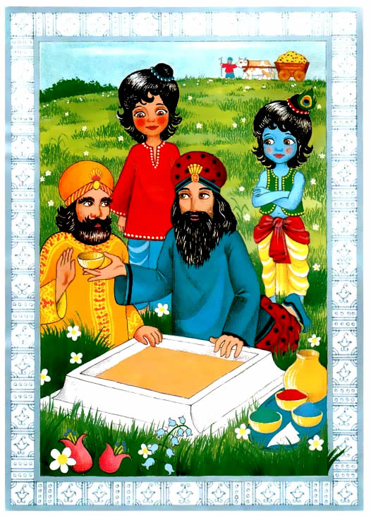

|
 |
Hace mucho, mucho tiempo atras, en la India en el bosque de de Vrindavan, el pequeño Gopal vio a su padre, Nanda Maharaj, organizando potes de oro cerca de una colina.
“¿Que haces?” Pregunto Gopal pero su padre no le contesto. En vez, siguio dibujando figuras en el suelo con arena de colores. Gopal pregunto de nuevo: “¿Estas jugando? ¿Puedo jugar contigo?” Nanda Maharaj solo continuo arreglando algunas frutas, granos y flores cerca de un pequeño altar.
“Por favor papá, dime que estas haciendo.” Su padre solo le dijo: “Gopal, ahora estoy muy ocupado, no te puedo explicar en este momento.” Pero Gopal queria saber. El Pregunto: “¿Es un sacrificio sagrado para Dios?”
|
|